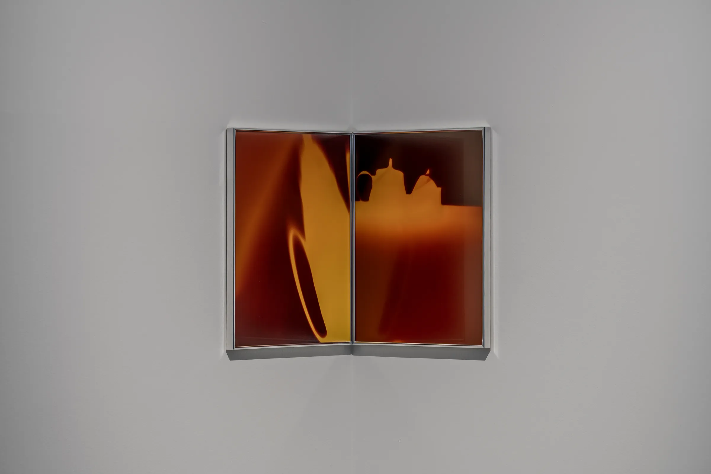
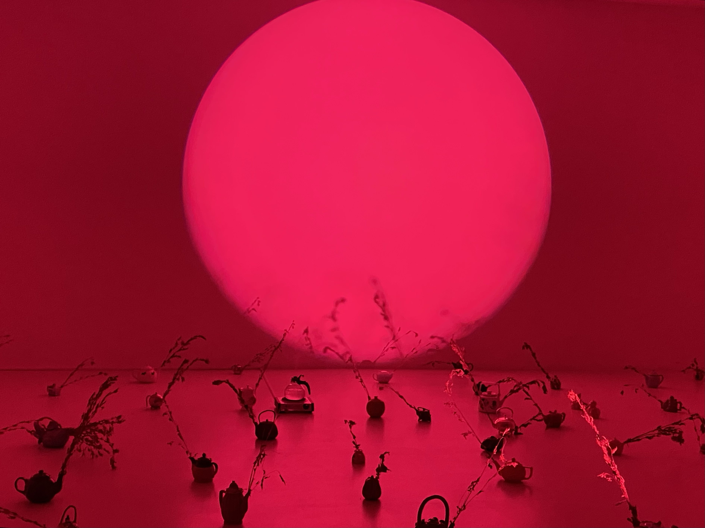
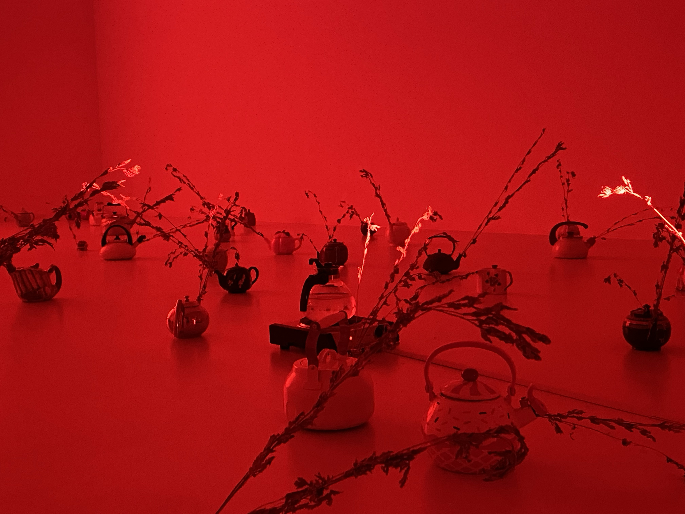
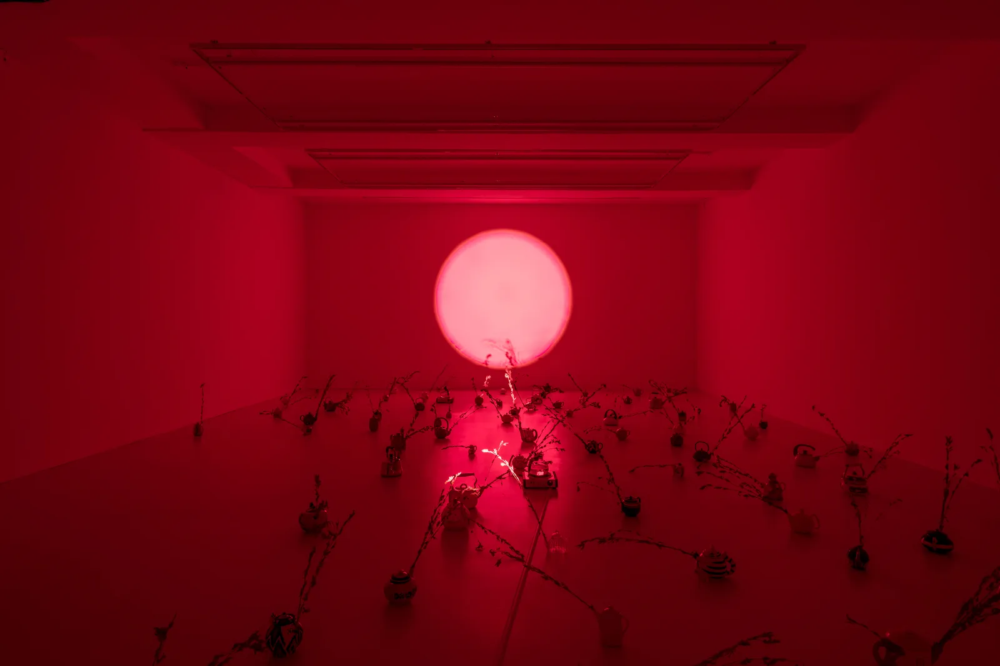

1. 벌레의 눈으로 뜨며
건축에서 앙시도
주목하고 싶은 점은 여기서 도면이 전체를 말할 때, 인간이 발을 붙이는 지면을 지칭한다는 것이다. 이유는 간단하다. 첫째, 가구를 바닥에 배치하는 등 인간의 생활 반경은 천장이 아니라 바닥이기 때문이다. 둘째, 인간은 이미 아래에서 위를 볼 수 있으므로 위에서 아래의 시선만 획득하면 전체가 성립되기 때문이다. 따라서 인간에게 필요한 것은 조감도다. 건축이 아니더라도 마찬가지다. 나무가 아닌 숲을 보라는 격언처럼 전체를 파악해야 한다는 말은 이미 잘 알려진 조언이지 않은가.
그런데 천장이라는 그 일부는 공간 전체를 결정하는 권력을 지닌다. 천장을 어떻게 구성하는지 따라 열, 빛, 소리 등의 형세가 달라진다. 천장은 실내의 전체 환경을 조절하는 HVAC1) 시스템을 구성하는 구역이기 때문이다. 일상에서 이런 천장에 문제가 생긴다면 인간은 난감해진다. 바닥이나 벽은 손이 닿기 때문에 어느 정도 해결할 수 있지만, 천장은 손이 닿지 않아서 해결하기 어렵고 시스템이 숨어 있어 원인을 파악하기도 어렵다. 누수처럼 그 상황을 받아들이며 바닥에 떨어지는 물을 계속 닦아야 한다. 천장 때문에 어떤 사건이 벌어질 때, 인간은 바닥에서 그 사건을 따라가야 할 뿐이다. 전문 기사가 수리하러 오기 전까지.
‘니키타 게일
이 글은 작가가 전시장에 구축한 하나의 세계를 통과하며 ‘아래에서 위’로 시선을 돌리고, 그 세계의 앙시도를 그리는 글이다. 몸을 숙여 바닥에서 물을 계속 닦게 하는 그 힘은 무엇인지 천장을 그려 보며 찾는다. 그리고 도면을 완성하는 수행의 의의에 관해 말한다.
2. 세계를 결정짓는 기호
대체로 전시장에 들어서면 전시 전경이 보인다. 관람객은 입구에서 전시의 규모나 흐름 등을 전체적으로 파악할 수 있다. 그러나 《99개의 꿈》은 다르다. 전시장의 무겁고 큰 문을 열면 우선 당혹감이 든다. 전시장 조명은 켜져 있지 않고, 인포메이션도 보이지 않고, 바닥이나 벽에 작품도 배치되어 있지 않다. 아직 개관하지 않은 시간에 잘못 들어간 듯하다.
전시는 전경을 보고 판단하는 시야 습관을 제지한다. 관람객의 시선이 전경 안이나 밖에 있는 대상을 겨냥하도록 만든다. 전경을 보려면 대상과 멀어지며 전경이 보이는 위치로 가야 하는데, 대상을 보려면 대상과 가까워지도록 움직여야 한다. 그래서 인포메이션을 보려면 우측으로 걸어야 하고, 1층에 있는 〈꿈5〉와 〈꿈7〉(그림1)을 보려면 입구에서 좌측 구석으로 가야 한다. 전시는 조감하는 시야 습관에서 벗어나 앙시를 직접 수행하는 과정으로 시작된다.

두 작품은 구석에서 서로 프레임을 맞댄 채 숨겨져 있다. 사진은 주전자라는 대상을 담고 있지만, 초점은 주전자가 아닌 다른 것에 맞춰진다. 이는 변형이라는 사실 자체다. 주전자가 스스로 몸을 길게 늘일 수 없다는 점, 사진의 구도에서 배경이 절반 넘게 차지한다는 점에서 사진은 어떤 이유나 상황을 전면적으로 암시한다. 그래서 사진에는 드러나지 않지만 피사체와 함께 찍힌 또 다른 힘을 보게 된다. 숨어 있던 다른 층위의 무언가를 건져 올리는 것이다. 사진 속 순간을 대기처럼 전체적으로 장악하고 있는 불그스름한 저것. 이 정체를 알기 위해 사진 속 순간을 설명할 수 있는 과거를 생각하게 되고, 무슨 사건이 있었는지 상황을 상상하게 된다. 색이나 모양 등 변형이라는 사실에 초점을 맞추는 것이다.
작품은 그 사건이 무엇인지 설명하지 않는다. 불안과 긴장만 암시되어 있을 뿐이다. 두 작품 모두 주전자의 형상은 오렌지에 가깝고, 그 주변은 적갈색이다. 피사체와 대상이 두 가지 색으로 구분되어, 사건을 겪는 대상과 사건 자체의 구분이 명확해진다. 대비와 그러데이션으로 인해 보는 이의 시야는 한곳에 고정되지 못하고 흔들린다. 대상과 사건을 번갈아 드러내며 불안과 긴장을 유발하는 영화적 기법과 닮았다. 각각을 살펴봤을 때, 〈꿈7〉은 피사체가 프레임 바깥으로 잘려 있고 모양이 길게 늘어나 있다. 프레임 밖이라는 상상력의 공간과 왜곡으로 생긴 방향성의 조합은 불안을 자아낸다. 〈꿈5〉는 테이블로 보이는 적갈색이 프레임의 절반을 차지하며 주전자를 위쪽으로 밀어내는 구도다. 대상을 변형시키는 사건이 전체적인 구성을 지배하면서 긴장을 형성한다.
두 작품에서 느껴지는 불안과 긴장은 대비와 그러데이션에 조합되어 ‘어떤 불안한 사건이 대상을 잠식하는 느낌’을 만들어 낸다. 그리고 불안한 구도는 운동성을 형성하며 그 힘이 변형을 일으키고 있는 현장처럼 나타난다. 주전자가 어떤 것에 관한 비유라 하더라도, 그 역시도 변형을 선택할 수 없었을 것이다. 피사체에 비해 배경의 힘이 크게 전달되기 때문이다.
독립된 프레임을 갖고 있어 개별적인 사건과 대상으로 보이지만, 연작 형식의 제목, 가장자리가 맞닿아 있는 배치, 피사체와 배경의 동일한 색 구조 때문에 두 작품은 같은 세계의 같은 순간이다. 즉, 사진 속 변형은 ‘공동의 사건’이다. 그런데 여전히도 공동의 그 사건이 무엇인지, 그 힘과 존재의 정체는 정확히 규명할 수 없다. 사건이 존재했다는 상황만 사진적 진술로 밝혀질 뿐이다. 프레임의 바깥, 그러니까 진술의 바깥을 볼 수 있는 자유로운 눈이 필요하다.

계단을 통해 지하로 내려가면 작고 단일한 공간이 한눈에 들어온다. 이곳은 전체적으로 붉게 물들어 있는 세계, 〈99개의 꿈〉(그림2)이다. 이곳의 조도는 전등이 아닌 벽에 쏘인 원형의 빛이 조성하고 있다. 딥핑크에 채도가 높은 이 조명은 벽의 중앙을 차지한다. 그리고 그 앞, 그러니까 바닥에는 많은 주전자가 놓여 있다. 이들의 주둥이에는 저마다 쑥이 꽂혀 있다.
각기 다른 무늬와 크기의 주전자들은 지면을 자기만의 크기로 점유하는 개체들로 나타난다. 그리고 원형의 빛은 수평선/지평선 위로 떠오른 태양으로 보인다. 지하에 구축된 〈99개의 꿈〉의 구도는 개체3)들이 하늘에 뜬 태양과 그 빛을 바라만 봐야 하는 세계의 구도와 맞닿아 있다. 그래서 바닥에 놓인 오브제들은 태양에 영향받는 세계의 개체들처럼 원형의 빛에 종속된 것으로 보인다. 하지만 이 구도만 닮아 있을 뿐, 작품 속 세계와 바깥(전시장 외부이자 실제) 세계는 쉽게 결부되지 않는다. 이미 1:1로 대응하는데도 불구하고 두 세계는 계속 미끄러진다. 이는 극명한 차이를 발생시키는 ‘태양’이라는 기호 때문이다.
땅은 지각의 변동처럼 변화 가능성을 인정받는다. 땅이 다르다면 이질적인 장소가 된다. 그러나 하늘은 어떤 변화 가능성도 인정받지 못한다. 하늘의 사실은 단일하다. 날씨라는 오차 범위만 있을 뿐, 하늘이 다르다면 ‘이질적인 세계’가 된다. 실제 세계의 하늘에서 관측될 수 없는 딥핑크의 태양은 지하를 다른 세계로 강제로 전환한다. 전체 구도의 유사성과 일부 기호의 차이성이 적절히 섞여, 지하는 원래부터 다른 세계였던 것이 아니라 어느 날 다른 세계가 되어버렸다는 서사를 추리하게 된다.
그래서 주전자에 왜 쑥이 꽂혀 있는가, 라는 의문에 관해 ‘위에서 아래’로 주전자들을 전체적으로 조감하면 답을 찾기 어렵다. ‘아래에서 위’로, 태양이 있는 하늘이자 벽으로 시선을 옮겨야 한다. 이 바닥 전체에 영향을 미친 그 천장. 다른 세계라는 것을 시사하는 동시에 세계를 완전히 변화시킬 수 있는 구조이자 일부. 그것은 하늘에서 세계를 규정하는 기호뿐이다. 사건은 그곳에 있다.
이쯤에서 1층의 두 사진에 숨어 있던 그 힘의 정체도 추측할 수 있다. 프레임의 바깥에서 배경을 지배하고 피사체를 변형하던 것은 이 딥핑크의 태양. 사진은 이로 인해 변화되는 세계와 그 순간들의 기록이다. 일이 다 끝난 것처럼 정적이고 차분한 분위기의 지하는 사진 이후의 풍경이 재현된 공간으로 연결된다. 그리고 주전자들의 주둥이에 꽂힌 쑥은 ‘하늘에 태양이 잘못 떴다’는 공동의 사건에 따른 결과로 연결된다. 당장 이곳은 다른 세계기 때문이다.
3. 생활 바깥에서 일어나고 있는 일
작품에서 쑥은 주전자들의 ‘주둥이’에 꽂혀 기능을 차단한다. 주전자들은 물을 ‘담을 수 없고’ ‘내뱉을 수 없다’. 즉 말하거나 들을 수 없다. 쑥이 꽂힌 주전자들은 다양한 의사소통이 경유되는 허브hub로서 몸이 아니다. 주전자들의 몸은 그 자체로 상징이다.4) 이는 ‘침묵’의 몸이다. 작품은 개체 혼자만의 침묵으로 나타내지 않는다. 그 몸을 여러 번 반복하고 집단화하여, 주전자라는 사물의 요소를 굵게 강조하고 침묵과 연결한다. 주전자는 다과 문화에서 자주 쓰이는 사물이다. 손님을 정성껏 대접하기 위해 쓰이고, 잔이 비면 다시 채움으로써 대화를 지속시키는 수장고로 쓰이고, 때로는 내면의 편안을 회복하기 위해 쓰이기도 한다. 이러한 생활을 촉진하고 연결하는 주전자의 몸이 바리케이트처럼 쑥으로 막혀 있는 것이다. 주전자의 몸은 생활이 경유되지 못하는 침묵으로 나타난다. 생활에는 어느 순간부터 서서히(혹은 갑자기) 할 수 없는 것들, 하게 되는 것들, 보게 되는 것들 등이 나타난다. 생활하는 몸은 생활권 바깥까지 조감하기 어렵기 때문에 생활권 내에서 그 원인을 추측한다. 이웃, 동료, 친구, 가족 등의 가까운 타인이 될 수 있다. 혹은 자기 의지라고 내면화할 수 있다. 하지만 이때, 서두에서 언급했던 작가의 작업을 다시 주목해 보면 다른 의문이 든다. 생활의 바깥에서 이를 은밀히 조정하는 일부는 없는가. 생활을 조정하는 것은 정말로 당장 가로막고 있는 이 쑥인가.
작고 아담한 주전자의 크기에 비해 쑥은 길고 굵다. 무게중심은 쑥에 있다. 쑥이 주체적으로 주전자의 기능을 막거나 금방이라도 넘어뜨릴 것 같은 위태로움을 형성한다. 주전자와 쑥의 구조는 이처럼 수직적으로 나타나는데, 쑥 역시도 이 세계 내에서 주체가 될 수 없다. 본래 번식력이 강한 쑥은 주변을 금세 장악한다. 하지만 이곳에서 주전자라는 공간을 벗어날 수 없다. 그들은 더 넓은 바닥으로 나아가지 못한다. 그들이 자라게 된 곳은 (자랄 수 있다면 자라게 될 곳은) 땅이 아니라 주전자 안이다.
전체적으로 종합했을 때 정적이고 차분한 분위기의 이곳에서 활력을 찾긴 어렵다. 딥핑크가 생장이나 수확 등 생명의 촉진을 떠올리기 어려운 색인 것도 이유겠으나, 주전자와 쑥이라는 오브제들에게서 활력 자체가 내제되어 있지 않은 것이 큰 이유다. 비유를 제외하여 실제로 그들이 움직이지 않는 것이기 때문만은 아니다. 이들이 생활을 주체적으로 어그러뜨리지 못하기 때문이다. 생활은 생계를 유지하기 위해 반복되는 루틴의 모습이다. 아침에 일어나 출근하고 사람을 만나고 퇴근하고 잠을 자고 다시 아침에 일어나는 것. 그래서 돈을 벌고 그 돈을 소비하며 생활을 가능하게 하는 것. 이 루틴이 고장 없이 잘 작동하도록 생활은 변형되지 않아야 한다. 활력은 이러한 생활이 주체적으로 어그러질 때 두드러진다. 여기서 주체는 몸의 주인으로서 몸을 움직이고 기능하는 동시에 성립되는 것을 의미한다. 생활의 변형은 생활 반경 내에서 이루어지지 않는다. 그 반경에 없는 것, 이를테면 타인이나 미디어의 모습 등이다. 생활 반경의 바깥의 것을 바랄 때, 고정된 형태에 하나의 틈이 생길 때, 틈을 벌리고 반경에서 벗어나며 루틴을 어그러뜨릴 때, 그 개체에게서 활력을 발견할 수 있다. 그래서 목표는 언제나 자기 삶의 바깥에 있으며, 작품의 제목인 꿈 역시도 현실의 바깥으로서 목표와 닮았다. 주체는 생활 반경 외에 있는 꿈이나 목표를 가지고서 스스로 자기 생활을 변형한다. 외부의 힘이 이를 막는다면 자기 힘을 발산하며 저항한다. 앞서 말한 바를 정확히 다시 말하자면, 주체는 꿈을 꿈으로써 성립되는 것이다. 그리고 그 꿈을 자기 생활에 반영한다.
그렇다면 99개라는 꿈의 수량에 따라 오브제들에게서 활력이 비례해야 할 것 같지만, 오히려 반비례한다. 잘못 뜬 태양에 의한 꿈 진행의 차단, 새로운 꿈을 생성할 수 없는 환경과 상태, 성장이나 번식도 할 수 없는 메마른 쑥들은 반복되는 생활조차 이루어지지 않는다는 것, 그리고 변형‘된’ 생활에 관해 주전자들과 쑥들은 어떤 결정권도 없다는 것……이로 인해 오브제들에게선 과거만 남아 있고, 활력에 의해 생성될 미래가 암시되지 않는다. 이런 오브제들은 황량한 이미지로 종합되어, ‘더 이상 무언가를 바랄 수 없음’의 감각을 지배적으로 구성한다.
몸 그 자체로 상징을 불러와 해석을 실행하게 하는 이 양상은 퍼포먼스 형식의 작품과 닮았다. 인간 퍼포머가 아닐 뿐, 이미 주전자들은 지하 전시실에서 여러 의미를 생성시키는 ‘수행’을 보이고 있다. 관람객은 이곳에서 퍼포먼스를 통해 ‘침묵 됨’을 감각하고 ‘아래에서 위’를 본다. 그리고 전면적으로 드러난, 침묵이 향하고 있으며 침묵에 이르게 한, 그 ‘위’의 정체를 마주한다. 딥핑크의 태양이 떠 있다. 앙시도를 완성했다.
그런데……이 세계는 왜 진작에 끝나지 않았는가. 다 끝난 이 세계의 앙시도를 그리는 것은 또 무슨 소용인가?
4. 그 이상을 계속 말하지 않고서 말하는
작품의 제목을 통해 이 세계에서 쑥이 꽂힌 주전자는 총 99개로 짐작할 수 있다. 하지만 이 바닥에 실제로 쑥이 꽂힌 주전자는 총 95개다. 1개는 전시장 입구의 인포메이션에 놓여 있다. 다른 3개는 쑥이 꽂히지 않은 주전자다. 이들은 3개의 핫플레이트 그리고 그 위에 각각 놓인 전기 주전자들이다. 지하에 들어선 관람객은 이들을 곧장 발견하기 어렵다. 왜냐하면 그 공간을 가장 많이 점유하고 있는 것은 원형의 빛 1개와 쑥이 꽂힌 95개의 주전자기 때문이다. 원형의 빛은 강렬한 색깔, 채도, 크기로 관람객의 시선을 맨 먼저 점령한다. 그리고 쑥이 꽂힌 주전자들은 낯설고 잦은 반복, 아래에서 위로 다양하게 선형을 그리는 쑥의 모양들로 관람객의 시선을 가로챈다.
전기 주전자들은 관람객의 자세한 관찰로 발견될 수 있는 듯 보이는데, 사실 처음부터 관람객의 주의에 침입하고 있다. 물을 끓이며 수증기를 내뿜고 미세한 소음을 조금씩 내는 방식, 특정 간격으로 휘파람처럼 휙! 소리를 내며 침묵에 잠긴 공간을 환기하는 방식이다. 그래서 관찰을 자세히 하지 않았다 하더라도 전기 주전자들의 이 기습으로 관람객은 중앙에 있는 전기 주전자를 자연스럽게 발견할 수 있다. 그리고 이러한 개체가 있다는 사실을 알아차리며 또 있는지 찾게 될 수도 있다. 전기 주전자는 원형의 빛이 있는 벽에 가까이 하나, 반대쪽 벽에 가까이 하나, 그 사이 중앙에 하나(아래 그림), 총 세 번 반복된다. 벽에 가까운 2개는 관람객의 시선이 잘 닿지 않고, 중앙에 놓인 1개는 갈대밭에 숨은 듯 쑥들 사이에 가려져 있다.

이 배치는 관람객의 주의를 환기하는 전기 주전자 그 자체를 드러내기 위한 것이 아니다. 오히려 관람객이 스스로 이들의 존재와 주의를 감지하게 하기 위한 것이다. 감지를 위해 관람객은 공간을 자세히 관찰하거나 감각해야 한다. 주의를 기울이는 것이다. 침묵의 반복으로 완결될 뻔한 이 세계를 무엇이 지속시키고 있는가. 무엇이 이 세계를 끝내고 있지 않은가.
전기 주전자들의 퍼포먼스는 자기들의 몸으로 다양한 요소를 발산한다. 딥핑크의 조도 속에 올라오는 수증기의 희미함, 공간 속 아주 소량의 습도나 미세한 쑥 향들……. 주둥이에 쑥이 꽂힌 주전자들은 침묵을 수행하며 활기가 약한 반면, 주둥이에 아무것도 꽂히지 않은 전기 주전자들은 활동적이고 활기를 띤다. 움직임을 만들며 시간을 만들고, 새로운 사건을 일으키고, 이 세계를 미래로 나아가게 한다. 시간이 있는 한 공간은 소멸될 수 없기에(그 반대도 동일하다) 활동은 이 소멸을 유예한다. 세계가 완전히 ‘100(끝)’에 이르렀다고 규정하지 못하게끔 틈을 만들어 지하의 이 세계를 유예한다.
핫플레이트는 물이 끓는데도 꺼지지 않는다. 일반적으로 물을 끓이는 것은 끝을 전제한다. 차를 우리거나, 재료를 익히거나, 따뜻한 물을 마시는 등 언제나 다음 과정이 있다. 물을 끓이는 것 자체는 목적이 되지 않는다. 그런데 전기 주전자는 물을 끓이는 것이 목적인 듯 필요 이상으로 끓이기를 계속 지속한다. 이로써 ‘물을 끓이다’의 의미는 새롭게 해석되고, 이에 따라 전기 주전자도 자기의 원래 의미를 초과한다. 처음 전기 주전자를 발견한 때에서 어느 정도 시간이 지나, 핫플레이트 위 이들의 활동은 관람객에게 새로운 의미를 우려낸다. 전기 주전자에 담긴 끓는 물은 결국 그 주둥이로 나오지 않는다. 몸 안에서 생성되는 수많은 어떠한 것이 말로 나타나기 전에 뒤엉키고 있는 모습이다. 말하기 직전의 상태를 의도적으로 계속 이어 나간다. 이는 말이 말하는 말하기의 몸짓5), 즉 이 세계를 유예하는 ‘발화 수행’이다.
하고 싶은 말이 정말 많은데 너무 벅차서 말하지 못할 때 몸이 부들부들 떨리는 것처럼, 말하기 직전의 상태는 몸짓으로 나타나기 때문에 동적이다. 이다음 무슨 일이 일어날지(무슨 말을 할지) 모르겠는 불안정의 감각, 물을 조금씩 증발시키는 소진의 감각, 손을 데면 당장 데일 것 같은 고열의 감각 등이 말하기의 몸짓으로 표현되며 동적인 에너지를 확장한다. 관람객은 전기 주전자들의 ‘말’이 자기 안의 언어로 해석되지 않더라도, 그들이 스스로 초과하는 것을 보며 그들의 말을 몸으로 느낄 수 있다. 말하기 직전의 사람을 계속 해석하게 되듯, 관람객의 눈은 3개의 전기 주전자에 비로소 집중된다.
한편 전기 주전자의 모습은 뜨겁고 안정적이고 견고하다. 그 안의 물만 동적이다. 외부에 의해 멈춰지지 않는 수동적 행위라면, 이 모습은 곧 깨지고 만다. 그들이 할 수 있는 의지를 넘어선 것이며 버틸 수 없기 때문이다. 하지만 안정적인 모습이 유지되는 것을 통해, 전기 주전자들이 스스로 발화를 멈추지 않는다고 볼 수 있다. 버티는 것은 어떤 외부에 의한 압력에도 자기 상태를 유지하는 주체적인 움직임이기 때문이다. 이로써 얼림을 통해 그 자체가 ‘미뤄짐’이 아니라, 끓임을 통해 그 자체가 ‘미룸’의 능동적 유예를 완성한다. 이러한 전기 주전자는 1개의 개인적인 발화가 아니라, 3개의 소수로 모여 집단의 틈을 벌리고 유예하는 문제적인 발화가 된다.
5. 증식하고 초월하는 목격담
유예는 목격자의 자리로부터 효용성을 얻는다. 목격이 없는 수행은 확장을 갖기 어렵기 때문이다. 목격자가 없다면 세계와 행위는 그 자체로 이미 완성된 세계다. 그 순간에 있던 수행과 상황을 다른 곳에서 진술하면서 다른 곳의 누군가가 그 수행과 상황을 듣는다. 그 순간이 누군가에게 다시 재생되고 그는 1개의 틈을 또 벌리게 된다. 목격자는 “미묘한 사건이 일어나는 열린 틈”6)이자 그 틈을 벌리는 존재다.
작품은 목격자를 관람객으로 나타낸다. 1층에서 지하로 내려오는 계단 앞은 관람객이 작품을 관람할 수 있는 작은 직사각형 공간이다. 작품의 한가운데도 아니고, 공간의 끝인 모서리에서 관람해야 한다. 작가가 구축한 세계에 완전히 들어설 수 없다. 공간의 중심에 갈 수 없으며 설 수 없다. 이런 이유로 쑥이 꽂힌 주전자 ‘되기’도 불가능하며, 전기 주전자들의 수행을 ‘하기’도 불가능하다. 그 층위에 나란히 놓일 수 없기 때문이다. 관람 공간의 배치는 관람객이 그저 이 세계에서 이루어진 침묵과 이루고 있는 유예의 수행을 보게만 만든다. 개입은 불가능하다. 목격의 행위가 강조된다.

관람객을 전체가 보이는 위치에 세운다는 점에서 앙시와 거리가 멀어 보일 수 있다. 하지만 작품 속 전기 주전자들은 조용히 감추어져 있어서 주의를 기울여야 발견될 수 있으며, 오래 관찰해야 그들이 초과하는 의미를 느낄 수 있다. 이 배치에 주목해 보면, 작품은 일부가 바로 보이는 위치를 만들어 관객이 보게끔 유도하지 않는다. 전체적인 상황을 끊임없이 관찰하게 하여 그 속의 일부와 의미를 스스로 발견한다. 관람 공간의 구성에 의해 ‘아래에서 위’를 바라보게 만들고, 앙시도를 그리며 전체를 결정하는 그 일부를 발견해 내도록 감각을 활성화하며 몸을 움직이게 만들기 때문이다.
이 목격자의 자리는 특정 개체에게만 주어지지 않는다. 작품의 제목에는 소유격이 없다. 99개가 누구의 것인지 밝히지 않음으로써 꿈의 소유자 자리가 빈다. 그래서 99개는 ‘우리의’ 것이 될 수 있도, ‘그들의’ 것이 될 수 있다. 관람객이 바닥을 점유하고 있는 개체들을 목격하게 되므로 언제나 ‘그들의’ 것이 되는 듯 보인다. 하지만 작업이 관람객에게 어떤 시나리오를 만들어낼지 고민한다는 작가의 인터뷰7)를 참고하면, 새로운 시나리오를 써 볼 수 있다.
시나리오 1번. 관람객 A는 관람을 끝내고 전시장을 나온다. 이후 관람객 B가 관람을 위해 직사각형 공간에 선다. 이때 관람객 A에게 소유격은 여전히 ‘그들의’일 수 있다. 하지만 ‘우리의’로 전환될 수도 있다. 관람객 B가 보기에, 관람객 A는 쑥이 꽂힌 주전자들, 물을 끓이는 전기 주전자들과 동일한 성격의 개체로 엮일 수 있기 때문이다. 목격하는 존재였던 관람객 A는 관람객 B에 의해 목격되는 존재가 된다. 목격하는 자리와 목격되는 자리가 번갈아 교대되는 것이다. 이처럼 주체의 자리뿐만 아니라 객체의 자리 역시 비게 되면서, 개체는 ‘99개를 보는 하나’가 되기도 하고 누군가에 의해 ‘99개 중 하나’가 되기도 한다.
시나리오 2번. 관람객 B가 직사각형 공간에 서서 관람객 A와 주전자들을 목격하고 있을 때, 관람객 C가 직사각형 공간에 들어선다. 그는 목격하는 관람객 B를 목격한다. 관람객 B는 관람객 C에 의해 관람객 A와 함께 목격되는 존재가 될 수 있다. 동시에 관람객 C는 목격과 틈으로서 1개(목격하는 존재 관람객 B)를 마주하며 100을 완성한다. 이때 100은 ‘끝’을 의미하지 못한다. 시나리오 3번에서 관람객 D가 직사각형 공간에 들어서서 관람객 B와 관람객 C를 목격할 수 있으며, 이런 경우에 관람객 D에게는 101이 되기 때문이다.
시나리오는 순차적으로 쌓이지 않을 수도 있다. 관람객 C와 관람객 D의 후기에 의해 전시를 보지 않은 사람도 그 세계의 목격자로 동참하고, 그들과 관련 없는 사람에게 후기가 닿으면서 목격자는 증식하고, 이 글 역시도 하나의 목격하는 존재로서 증식된 목격자이거나, 혹은 목격되는 존재가 되어 목격자를 증식시킬 수 있다. 세계는 완전히 ‘끝(100)’에 이를 수 없으며 지속적으로 유예된다. 멈추지 못하고 계속 끓는다. 직사각형 공간의 배치는 작품이 스스로 의미를 초과하던 것보다 더 크게 초과시킨다.
전시를 통해 관람객은 ‘아래에서 위’를 보며 이 세계의 앙시도를 그리고, 이곳의 전체를 결정하는 한 부분의 존재를 목격한다. 그리고 침묵 된⼀유예시키는 존재가 있다는 것을 목격한다. 세계에 관한 앙시도 그리기는 비가시적인 권력을 전면화하는 것, 개체를 주체로 전환하는 것, 침묵 혹은 유예의 수행을 가시화하는 행위이며, 동시에 목격자를 증식시키는 행위다. 이 전시에서 앙시도를 그려 본 관람객은 또 다른 앙시도를 그릴 수 있을지도 모른다. 지하에서 1층으로 올라온 관람객은 대각선 반대쪽 모서리에 걸린 〈꿈 5〉와 〈꿈 7〉을 다시 발견한다. 그리고 쑥이 꽂힌 주전자 1개를 인포메이션에서 다시 마주한다. 전시장의 무겁고 큰 문을 다시 연다. 세계를 규정하는 밝고 흰 기호를 마주한다. 그 세계에서 관람객은 무엇인가를 감지하게 될지 모른다. 그러므로 전시의 시작과 마지막에 놓인 작품은 인포메이션에 있는 쑥이 꽂힌 주전자 1개가 아니다. 전시장에 들어와 감지하고, 앙시도를 그리고, 이 바깥에서 또 다른 것을 ‘목격’할 관람객의 지속적인 퍼포먼스다.
6. 벌레의 눈으로 감으며⼀조감하는 눈 완성하기
작품에서는 세계를 변화시킨 원인이 벽에 비친 빛으로 분명히 관측된다. 그래서 앙시도는 비교적 쉽게 완성될 수 있다. 하지만 전시장 밖에서는 그 원인을 명확하게 관측하기 어렵다. 기후적 원인에 있어서 공간의 규모나 개체의 수도 다르고, 사회/정치적 원인에 있어서는 그것이 물질의 꼴도 갖추지 않기 때문이다. 영향력이 큰 원인인데도 불구하고 다양한 이해관계가 섞이며 가시성이 확보되지 않는다. 이로 인해 어떤 주체들은 이유도 모른 채 꿈을 잃고 개체가 된다.
개체는 자기의 여건에 따라 세계를 다르게 경험한다. 같은 구조에도 불구하고, 어떤 개체의 생활은 평화로운 반면, 어떤 개체의 생활은 잔혹할 수 있다. 그래서 서로 다른 개체들이 각자의 생활을 파악하려면 주의 깊게 감각하려는 노력이 필요하다. 그 주의를 기울이지 않는다면 (국가 간의 보복으로 전쟁이 일어나거나 악화되는 기후로 어느 개체는 생활을 잃는 등에도 불구하고 괄호 속에 소리 없이 묵음이 되어) 평화로운 세계가 지속되는 것처럼 보인다. 작품은 이렇게 지속하고 있는 세계의 지하에서, 관람객을 목격하는 위치와 목격되는 위치에 번갈아 놓는다. 관람객은 생활을 이루는 바닥에 의문을 제기하게 되며, 자기와 다른 생활이나 권력이라는 일부 등 생활권 바깥을 생각하고, 타인의 바닥과 자기 바닥을 구분 짓는 경계도 허물게 된다. 바닥이 의미를 잃고 사라지는 것이다. 그렇게 추락하는 상태가 되어, “보고 느끼는 관습적인 양식들은 와해된다. 시점(perspective)은 비틀리고 배가된다. 시각성의 새로운 유형들이 발생한다.”8) 주체이자 객체가 뒤섞인 관람객은 새롭게 구성된 시점에서 무엇을 목격하게 되는가?
사건에 의해 꿈을 꾸지 못하게 된 개체가 있다는 사실. 수행을 반복하며 끝을 유예하는 주체가 있다는 사실. 태양이 잘못 뜨는 사건은 공동의 것이라는 사실. 개체 간의 생활은 구별되지 않는다는 사실. 이 모든 상황은 주의 깊게 살펴야 발견되며, 이를 목격하는 행위가 이들에게 의미를 부여한다는 사실. 그리고 목격자는 목격한 것을 몸에 담아 실어 나르며 1개의 생생한 틈 자체가 된다는 사실. 이 모든 사실이 뒤섞인다. 그래서 각각의 사실은 누구만의 몫으로 할당되는 것이 아니라, 모두의 사실이다. 이때 세계라는 거대한 공간 자체를 관망하며 완전에 가까운 조감을 할 수 있다.
딥핑크의 태양이 뜬 작품 속 세계는 이미 끝난 것일지도 모른다. 주전자들은 회복하지 못하고, 전기 주전자는 깨지고, 세계는 더 이상 지속되지 않을 수 있다. 전시가 끝나면서 이 세계를 더 이상 목격할 수 없게 됨에 따라, 이 전시를 기억하는 이가 줄어듦에 따라, 그 세계는 더 이상 지속되지 않을 수 있다. 무슨 소용이 있겠냐 할 수 있겠지만, 위를 보는 행위는 여전히 의미를 지닌다. 앞으로 도래할 또 다른 태양에 관해서, 새로운 어떤 말을 할 수 있게 되기 때문이다. 고개를 드는 이 저릿한 불편함은 숨어 있는 당신을 곧 겨냥할 것이다.
2026.06.11.